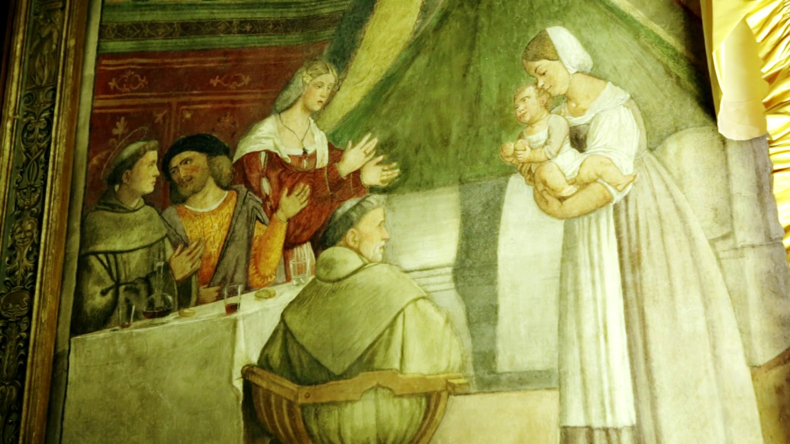
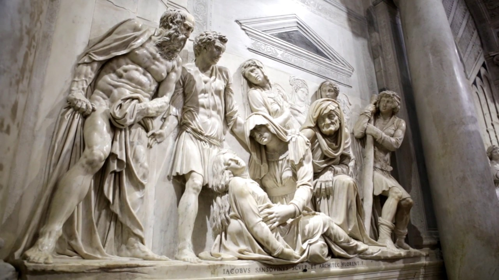
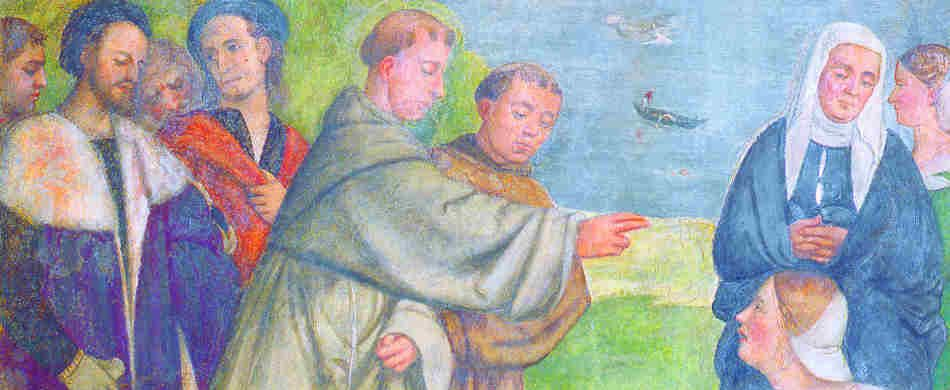
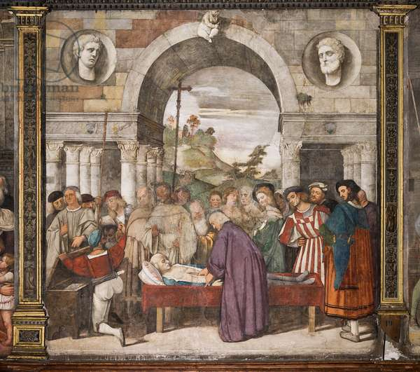
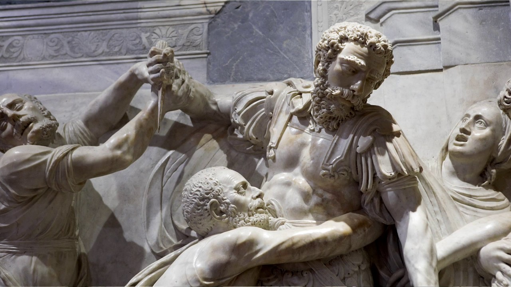

Tommy and St.Anthony's Bread

St. Anthony's 5th miracle: 20-month-old Tommy fell into boiling water near the Basilica. His mother, in
desperation, promised to donate her child's weight in bread to the poor if he was revived. Miraculously,
while she prayed, Tommy awoke as if from a deep sleep, demonstrating the saint's powerful intervention.
Eurilia Comes Back to Life

St. Anthony's 6th miracle involved a young girl who had fallen into a well. Her distraught mother prayed
for her rescue, pledging to visit the Basilica in gratitude. Suddenly, a mysterious light illuminated
the well, and the girl floated safely to the surface, unharmed. This miraculous event further solidified
St. Anthony's reputation for divine intervention.
A Dead Man Speaks

In Lisbon, two bitter rivals' sons met, and in a fit of hatred, one killed the other and buried the body
in Anthony's father's garden. Anthony, away in Padua, learned of his father's plight through divine
revelation. He obtained permission to travel, covering 1,200 miles in hours. In court, he summoned the
murdered man's spirit, which identified the true killer and exonerated Anthony's father. The revived man
sought absolution, then passed away again. The next day, Anthony returned to Padua, having been away
only for a single night, showcasing a miraculous intervention.
The Miser's Heart

St. Anthony's 9th miracle involved a woman who had lost a precious necklace. She prayed to the saint,
promising a donation to the Basilica if it was found. Moments later, her necklace mysteriously appeared
at her feet, reaffirming the saint's reputation for answering fervent prayers and performing miraculous
acts.
A Violent Husband

St. Anthony's 10th miracle featured a man who had lost his hand in a work accident. The man sought the
saint's help, vowing to visit his shrine if his hand could be restored. Overnight, he experienced a
miraculous healing, with his hand fully reattached, leaving witnesses in awe of St. Anthony's miraculous
powers.